How to Recognize It
The blue paint, the aluminum H-frames, and the 4-rib step with a center section of cross-ribbing identify a Type 5.
See the gallery of detail photos below. The Workmate 79-001 Type Study spreadsheet shows how all ten Types compare.
Black & Decker Workmate 79-001 Type 5
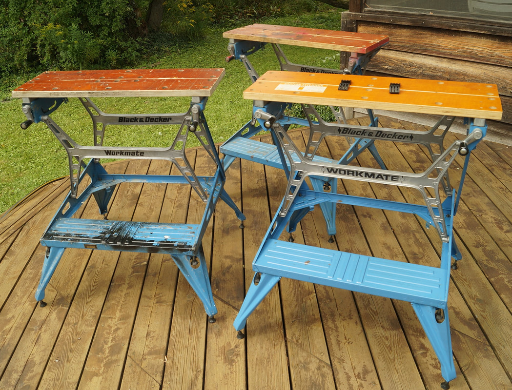
Three 79-001 Type 5's!
Like the very similar 79-001 Type 3, the Type 5 was part of the UK line of WM625 Workmates manufactured in Ireland. The Type 5 was imported to the U.S. and probably sold interchangeably with the Type 4 for several months in 1977. See the 79-001 Timeline page for more details. The Type 5 is almost an exact match to the Workmate that was sold in the UK as the WM625 Type E04, except that it has the cross-rib section on the footrest from the WM625 Type E05. As of September 2024, I have seen only five Type 5's, three of which are shown in the top photo.
Notable Characteristics
Notable Characteristics
- Since the Type 5 came from the Irish factory, it's easiest to track the changes by comparing it to the Type 3 rather than the Type 4, which was made in Brockville, Ontario. My page about the Type 3 explains how it (and thus the Type 5 as well) differs from the 79-001's made in Brockville
- The most visible difference between the Type 5 and the Type 3 is the footrest, which has a central section with ribs that run crossways to the others.
- On the other hand, the most significant but not visible characteristic of the Type 5 is its light weight due to a thinner gauge of steel. It weighs a little more than 27 pounds, three to six pounds lighter than all other Types except the all-aluminum Type E. It still feels quite sturdy.
- The mounting holes near the ends of each jaw are smaller on the Type 5, about 1/4", because they no longer have nylon nuts embedded in them. Instead, the plywood itself is threaded to accept the bolts that attach the jaws from below.
- The eight bushings installed at the pivot points of the H-frames are a blue nylon rather than the metal ones usually used for the Type 3.
- The torsion spring for the top release levers was modified in shape with the addition of a small bend at the end that presses on the lever. That bend is captured in a slot in the lever to hold the spring more securely to the lever. On the Type 3 the end of the spring can sometimes slip off the lever.
- The upper portion of the legs on the Type 5 was modified so that they don't splay outward so far when unfolded. This makes them slightly more upright, so the Type 5 is about 3/8" taller overall than the Type 3.
- There was a minor change to the feet, switching from a grooved post to a smooth one.
- The label on the jaws is the same style used on the Type 1, 2, and 3.
- Like the Type 3, some Type 5's use all upper case for the "WORKMATE" imprint on the H-frames.
Click on any image below to open the gallery of full-screen images.


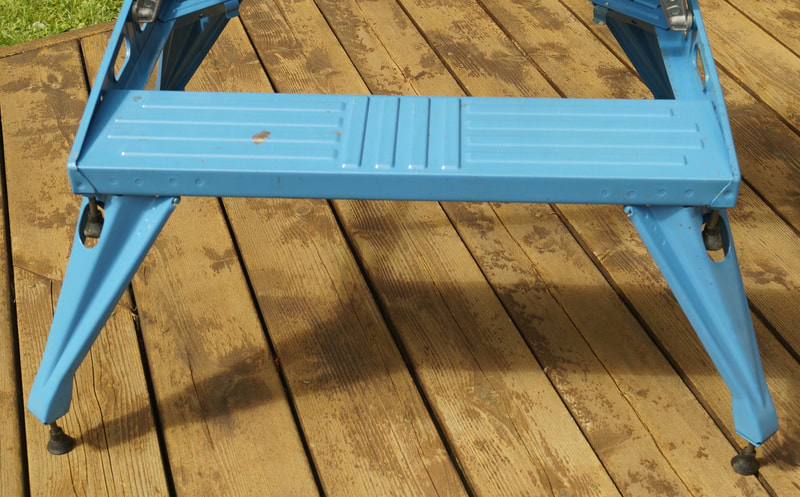


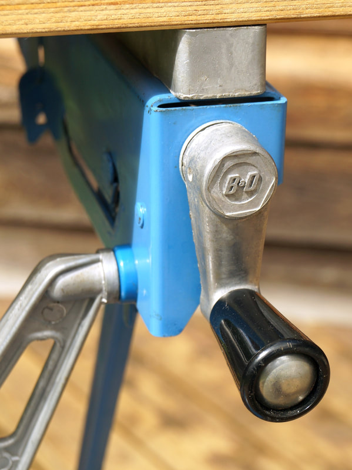

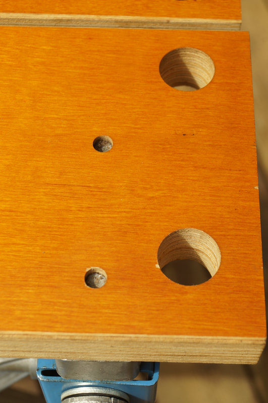

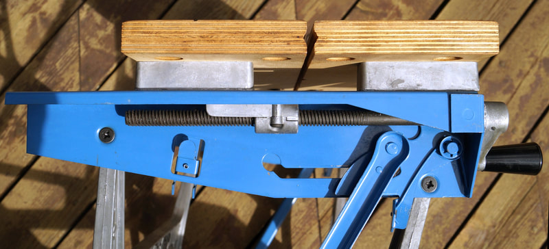

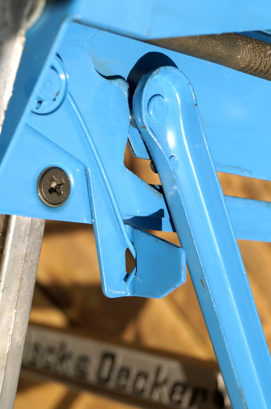

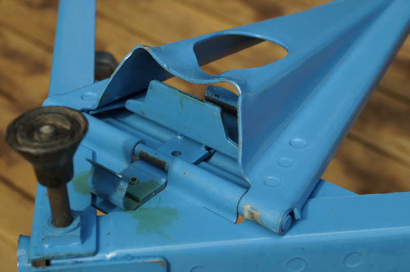

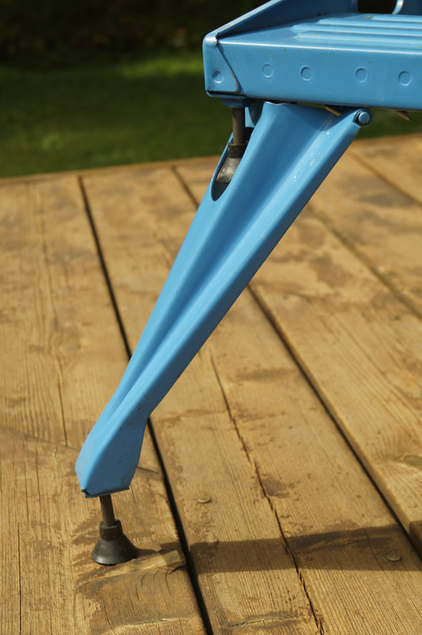

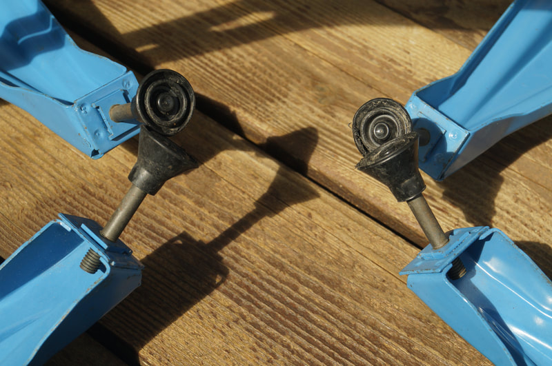

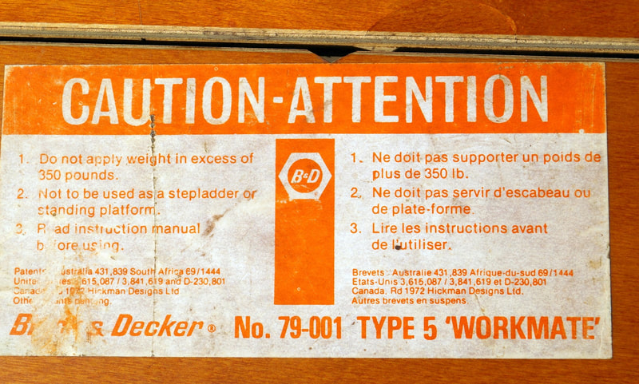


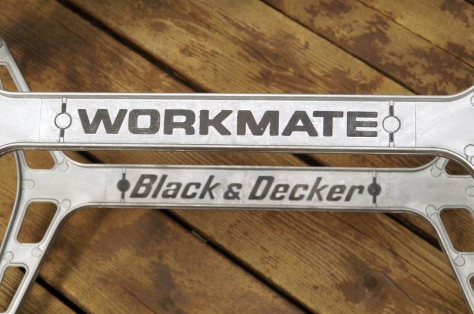

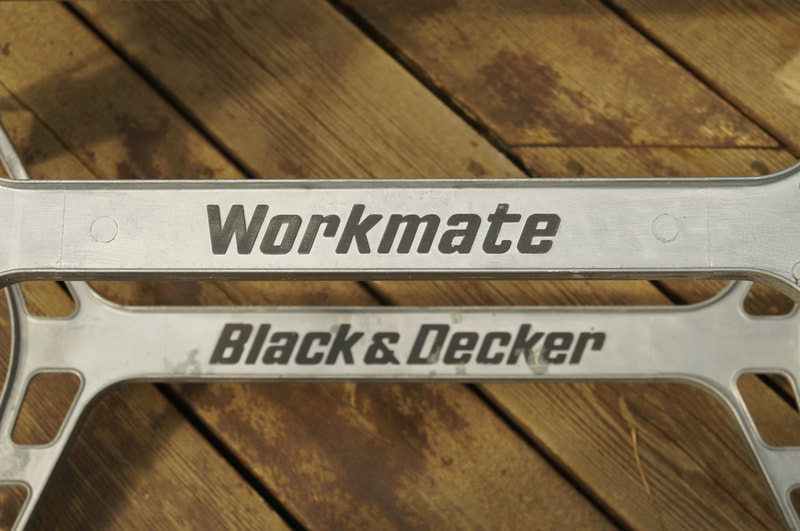